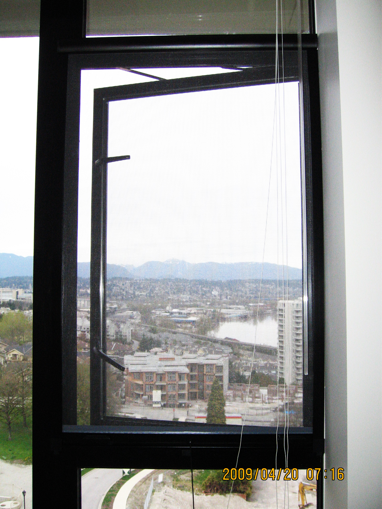
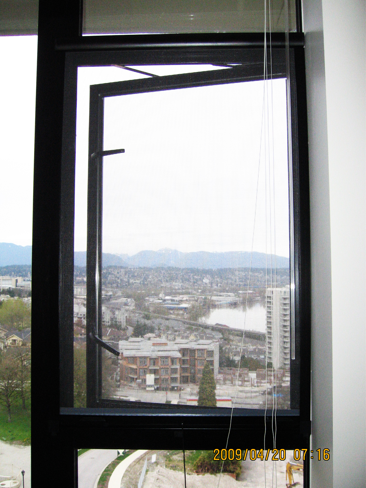
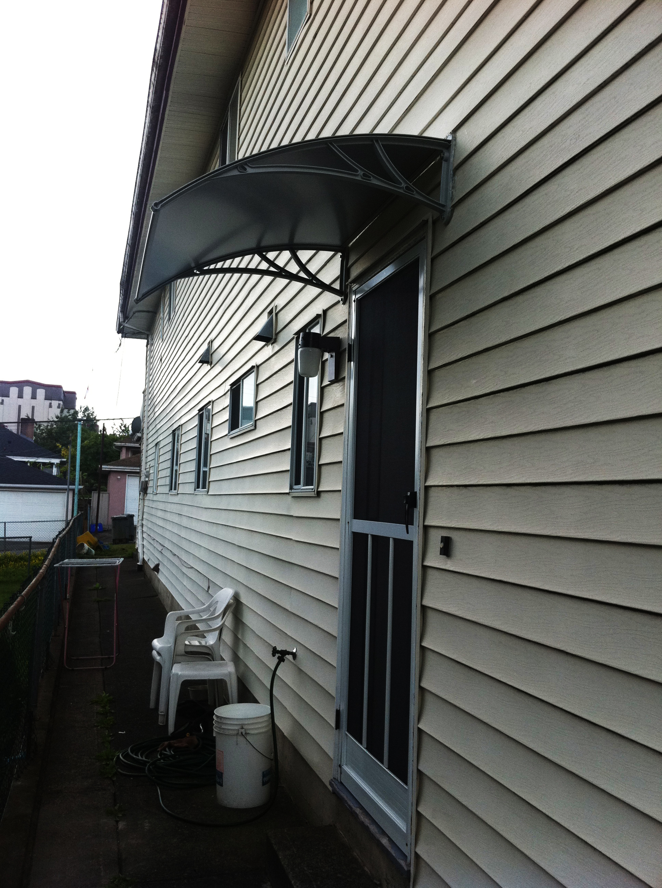
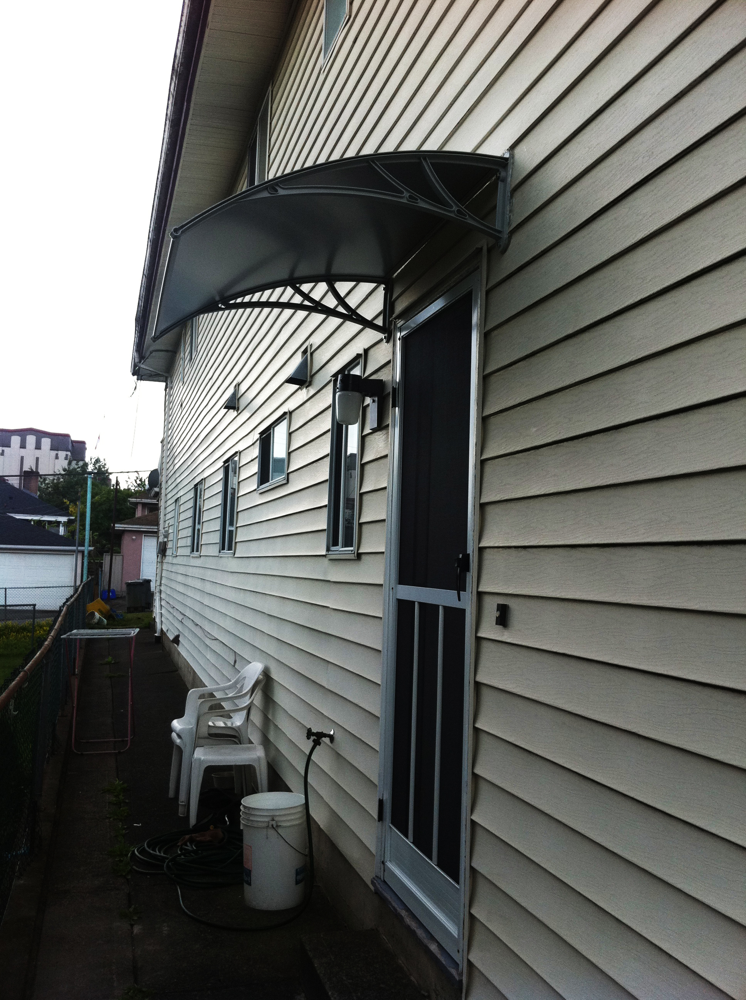

Retractable Screen Doors
The Omnifine retractable screen door is made of the highest quality extruded aluminum with the following main features:
Customized fit for varying door styles, with single-doors up to 47" x 96", and french-doors up to 96" x 96".
Doubled-sided magnet connectors running from top to bottom.
Textile fabric inside frame to hold onto screen.
Four sided aluminum frame with screen made from high grade fiberglass.
Perfectly designed for French-Doors, Inswing/Outswing doors, Sliding Patio doors.

 



 
